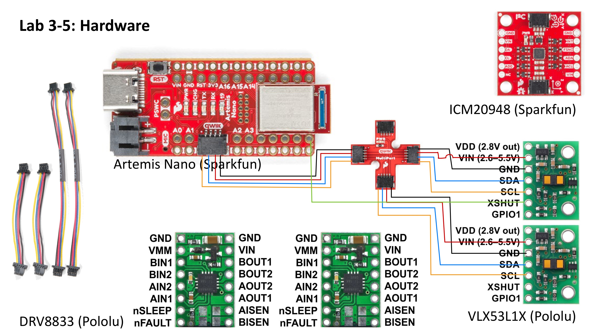
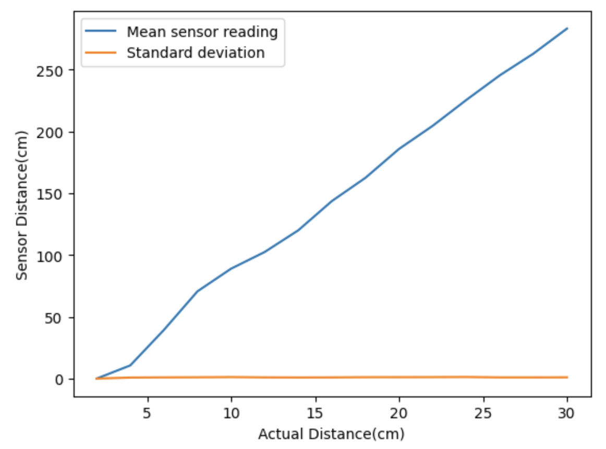
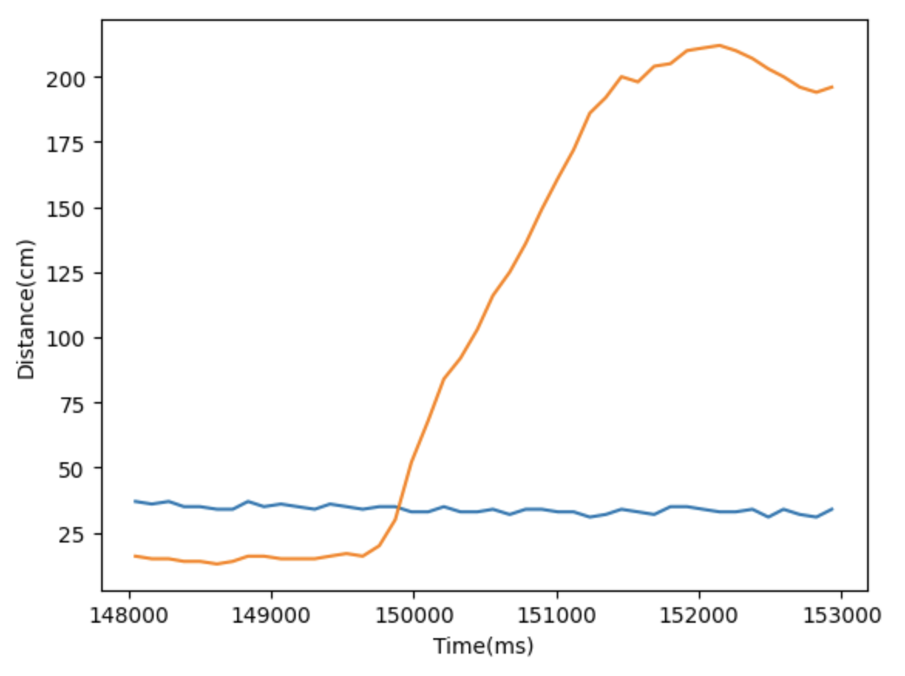

Lab 3: Time of Flight Sensors
In our third lab, we solder the time of flight sensors to the Artemis board and create a software framework for collection of distance data.
Prelab
Using the Example1_wire_I2C example code, I printed the I2C sensor address:
The actuall I2C sensor address is 0x52, but it was bit shifted since the least significant bit is used to indicate the read/write status. 0x29 is 0x52 shifted to the right, so that is the displayed address. Since the address of both sensors are the same, I must change the address of one sensor during setup so that the Artemis can differentiate between the two. Another possible method is to alternate shutting down one sensor at a time whenever you need to take a reading from the other sensor, but this is risky since the sensors may take more time to start up every time. I decided to solder the XSHUT pin of one sensor to pin 8 of my Artemis board, which I then used to shut off the corresponding sensor during setup and change the address of the other sensor. I then turned the first sensor back on, leaving two sensors able to work simultaneously with different addresses.
Since we are given 2 time of flight sensors, one will be placed on the front of the robot while the other will be on the side. This configuration allows the robot to gather distance information in the x and y axes, which will help in mapping out the obstacles in an area. One limitation of this sessor configuration is that only one side at a time will be able to sense objects, but this can be worked around by turning the robot around to sense the other side. Here is the wiring diagram of the ToF sensors and the Artemis board:
First, I characterized the sensors by graphing sensor readings at known distances. I found that the readings were good up to 30cm. Unfortunately, that was the length of my ruler, so I stopped measuring, but I would keep measuring to see how long the maximum range of the sensor is while maintaining data accuracy. The standard deviation of the data is negligible, showing that the results are very repeatable.
Lab
ToF sensors and QWIIC breakout board connections:t

I chose to set the ToF sensors to short mode, since the range of short mode (up to 1.3m) is enough for the purposes of our robot to scan its surroundings. Sacrificing the extra range allows the sensors to be more accurate regardless of the ambient lighting.
- 2 ToF sensors working in parallel:
Since I changed the address of one of the sensors during setup, there was no problem reading from two sensors in parallel.
- ToF sensor speed:
I got around 290ms between readings using this code:
The limiting factor for the sensor speed is the ranging time. This value can be manipulated by the user, but the tradeoff for a lower ranging time is the possibility of less accurate distance data.
- Distance vs Time: 